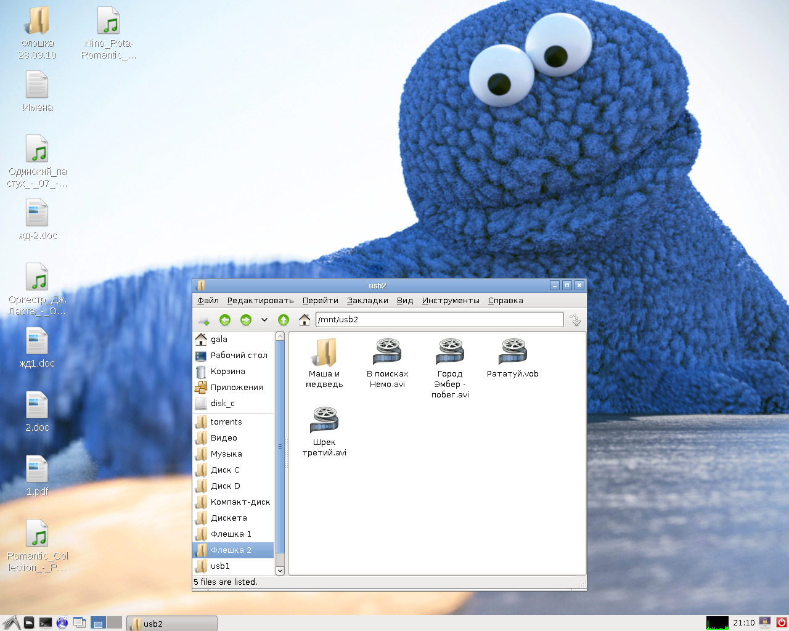

Давно мечтал настроить автомонтирование с помощью autofs. Вроде бы всё очень просто, но до сих пор до меня не доходила одна очень простая, но ключевая вещь. Но об этом попозже, сначала опишу настройку.
Сначала, как водится, нужно установить autofs:
# apt-get install autofs5
Затем задать ему настроечные файлы. Первый файл называется /etc/auto.master и содержит всего одну строчку:
/mnt/.autofs /etc/auto.misc --timeout=60
Эта строчка говорит о том, что все обращения к каталогу /mnt/.autofs будут обрабатываться демоном automount, настройки которого указаны в файле /etc/auto.misc. Опция --timeout=60 сообщает, что если к какому-либо диску не обращались в течение 60 минут, его нужно автоматически размонтировать.
Второй файл, как вы уже наверное догадались, называется /etc/auto.misc, у меня на компьютере он содержит следующие строчки:
cdrom -fstype=auto,ro :/dev/sr0 floppy -fstype=auto,umask=000 :/dev/fd0 usb1 -fstype=auto,umask=000 :/dev/sdc1 usb2 -fstype=auto,umask=000 :/dev/sdd1 usb3 -fstype=auto,umask=000 :/dev/sdc usb4 -fstype=auto,umask=000 :/dev/sdd
В первом столбце сообщается название каталога, в который будет смонтирован диск, во второй колонке перечисляются опции монтирования, в третьей колонке - имя файла устройства. Двоеточие на самом деле является разделителем имени компьютера и диска на нём. Autofs может автоматически монтировать не только файловые системы на локальных устройствах, но и каталоги NFS или Samba.
Перед запуском autofs можно создать в каталоге /mnt/.autofs подкаталоги cdrom, floppy, usb1, usb2, usb3, usb4 и проставить на них права доступа. Например, я ограничился двумя группами - cdrom для устройства, с которого можно только читать, и floppy для устройств, на которые можно и читать и писать:
# cd /mnt/.autofs # chgrp cdrom cdrom # chmod 550 cdrom # chgrp floppy floppy usb1 usb2 usb3 usb4 # chmod 770 floppy usb1 usb2 usb3 usb4
Теперь можно добавить в группы floppy и cdrom пользователей, которые должны иметь доступ к дискетам/USB-дискам и приводу компакт- и DVD-дисков. Например, вот так:
# adduser stupin cdrom # adduser stupin floppy
Теперь можно запустить autofs:
# /etc/init.d/autofs start
Теперь о простой, но очень важной детали. Если теперь просто зайти в каталог /mnt/.autofs, то окажется, что он пуст. Несмотря на то, что мы создавали в каталоге /mnt/.autofs подкаталоги cdrom, floppy, usb1, usb2, usb3, usb4, эти каталоги после запуска демона autofs не отображаются. На самом деле мы создавали их только для того, чтобы определить права для смонтированных файловых систем.
Эти каталоги не появятся в /mnt/.autofs до тех пор, пока мы не попытаемся к ним обратиться!
Например, заходим в каталог /mnt/.autofs и видим, что там ничего сейчас нет:
# cd /mnt/.autofs # ls
Не обращая на это внимания, пытаемся обратиться к каталогу /mnt/.autofs/usb1, как будто он есть:
# ls usb1 1 2
При обращении к этому каталогу autofs активировал скрытый каталог и смонтировал в него USB-диск. Теперь, пока каталог не успел ещё отмонтироваться, его можно увидеть:
# ls usb1
Так вот, для того, чтобы вас не смущало отсутствие каталогов и вы не гадали, какие каталоги там могут появиться, если к ним обратиться по имени, можно создать в /mnt символические ссылки, которые сами всегда будут существовать и указывать на нужные каталоги:
# cd /mnt # ln -s .autofs/cdrom cdrom # ln -s .autofs/floppy floppy # ln -s .autofs/usb1 usb1 # ln -s .autofs/usb2 usb2 # ln -s .autofs/usb3 usb3 # ln -s .autofs/usb4 usb4
Теперь можно зайти в каталог /mnt и увидеть все диски, которые смонтированы в настоящее время статически или монтируются автоматически при обращении к ним:
# cd /mnt # ls # ls cdrom disk_c disk_d floppy iso usb1 usb2 usb3 usb4
Можно зайти в любой из каталогов и увидеть его содержимое. При этом автоматически монтируемые диски смонтируются при обращении к каталогу.
Есть, правда, и несколько неприятные вещи. Например, умные файловые менеджеры не меняют текущий каталог для того, чтобы отобразить его содержимое. Как следствие, когда мы переходим по ссылке, происходит обращение к автоматически монтируемой файловой системе и она монтируется. Создаётся список файлов в точке монтирования, этот список выводится файловым менеджером на экран. Если теперь человек надолго задумается, диск автоматически отмонтируется, т.к. он никем не занят и к нему не было обращений. Подсистема inotify сразу же сообщит об исчезновении файлов из каталога файловому менеджеру и файловый менеджер обновит содержимое каталога - покажет пустоту.
Поэтому удобно пользоваться таким автомонтированием только из командной строки, из Midnight Commander и из других файловых менеджеров, которые меняют текущий каталог.
